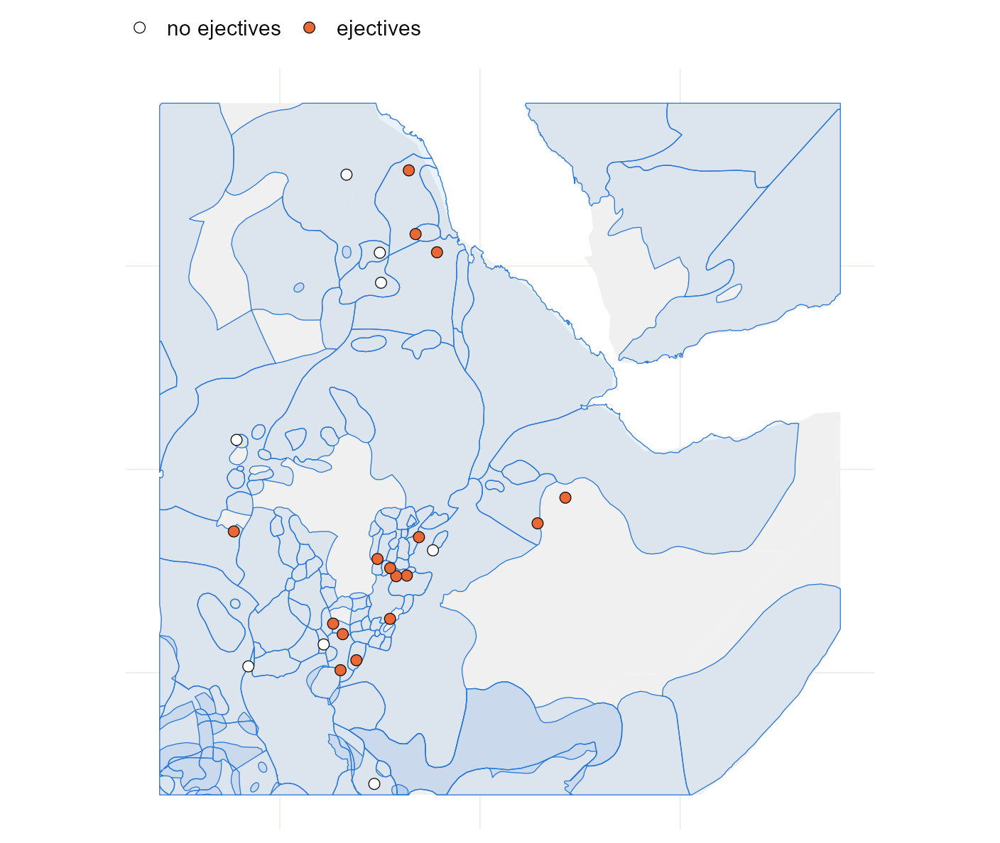

5 Maps: coordinates, distances and neighbours
Spatial models need one of two things from your coordinates: distances between languages, or a list of who neighbours whom. Build both, and learn what each choice assumes.
5.2 Languages as points
The data give each language one longitude and one latitude. st_as_sf() turns those two columns into a spatial object, and crs = 4326 says they are ordinary degrees on the globe.
pts <- st_as_sf(d, coords = c("lon", "lat"), crs = 4326, remove = FALSE)
pts[1:3, c("name", "family", "geometry")]## Simple feature collection with 3 features and 2 fields
## Geometry type: POINT
## Dimension: XY
## Bounding box: xmin: 36.7 ymin: 7.39 xmax: 39.3 ymax: 44
## Geodetic CRS: WGS 84
## name family geometry
## 1 West Circassian Abkhaz-Adyge POINT (39.3 44)
## 2 Beja Afro-Asiatic POINT (36.7 17.2)
## 3 Alaba-K'abeena Afro-Asiatic POINT (38.2 7.39)A point is a simplification. A language is spoken over an area, sometimes a discontinuous one, and Glottolog’s point is roughly its centre. For a world sample that is good enough. For a study of one region, speaker-area polygons are better if you can get them, and the last section of this chapter shows where they plug in.
5.3 Distances
Distance on a globe is measured along great circles. st_distance() does it for sf points and sp::spDists() returns a plain matrix in kilometres, which is the more convenient form.
coords <- as.matrix(d[, c("lon", "lat")])
km <- sp::spDists(coords, longlat = TRUE)
dimnames(km) <- list(d$name, d$name)
show <- c("Tigrinya", "Harari", "Zulu", "Central Aymara")
round(km[show, show])## Tigrinya Harari Zulu Central Aymara
## Tigrinya 0 753 4984 12318
## Harari 753 0 4417 12500
## Zulu 4984 4417 0 9929
## Central Aymara 12318 12500 9929 0Next, find how far each language is from its nearest neighbour in the sample.
nearest <- apply(km + diag(Inf, nrow(km)), 1, min)
round(quantile(nearest, c(0, 0.25, 0.5, 0.75, 1)))## 0% 25% 50% 75% 100%
## 5 75 138 275 1508The sample is very uneven: half the languages have another within about 140 km, and the most isolated is 1,500 km from anything. Every spatial model has to cope with that, and they cope in different ways.
5.4 Flat maps and their cost
Some models (the Gaussian process of Chapter 6) want coordinates in which ordinary straight-line distance means something. Degrees will not do: a degree of longitude is 111 km at the equator and 56 km at 60° north. The fix is to project. Equal Earth is a reasonable projection for the whole world.
xy <- st_coordinates(st_transform(pts, "+proj=eqearth")) / 1000 # km
flat_km <- as.matrix(dist(xy))
close <- km < 3000 & upper.tri(km)
round(quantile(flat_km[close] / km[close], c(0.05, 0.5, 0.95)), 2)## 5% 50% 95%
## 0.86 0.97 1.17For pairs of languages within 3,000 km, the distance on the flat map is mostly within about 15% of the true one. The error comes mostly at high latitudes and across the cut at the 180th meridian, where Alaska and Chukotka end up on opposite edges.
Methods that work on the sphere need no projection. They take either degrees directly or the position of each language as a point on a unit sphere:
to_sphere <- function(lon, lat) {
rad <- pi / 180
cbind(x = cos(lat * rad) * cos(lon * rad),
y = cos(lat * rad) * sin(lon * rad),
z = sin(lat * rad))
}
head(round(to_sphere(d$lon, d$lat), 3), 3)## x y z
## [1,] 0.556 0.456 0.695
## [2,] 0.766 0.570 0.296
## [3,] 0.780 0.613 0.1295.5 Neighbours
The other family of models (Chapter 7) never looks at a distance. It needs a graph that says which languages count as neighbours. For points there is no natural answer, so you choose a rule. Three common ones:
# 1. the k nearest languages, made mutual
knn <- make.sym.nb(knn2nb(knearneigh(coords, k = 5, longlat = TRUE)))
# 2. every language within a fixed distance
band <- dnearneigh(coords, 0, 500, longlat = TRUE)
# 3. natural neighbours: a triangulation of the points
tri <- tri2nb(coords)
compare <- function(nb) {
c(links_per_language = round(mean(card(nb)), 1),
without_neighbours = sum(card(nb) == 0),
separate_pieces = n.comp.nb(nb)$nc)
}
rbind("5 nearest" = compare(knn), "within 500 km" = compare(band),
"triangulation" = compare(tri))## links_per_language without_neighbours separate_pieces
## 5 nearest 6.4 0 1
## within 500 km 9.1 44 85
## triangulation 6.0 0 1Read the three columns as three things that can go wrong.
- Nearest neighbours give every language about the same number of links, whether its neighbours are 20 km away or 2,000. The graph is in one piece.
- A distance band is the most natural idea and the most troublesome in a world sample. Languages in dense regions get dozens of links, isolated ones get none, and the graph falls into many pieces. The models of Chapter 7 need one piece.
- A triangulation always gives one piece and needs no tuning. It also draws long links across oceans, and because it works on raw degrees it treats the map as flat.
world <- ne_countries(scale = "small", returnclass = "sf")
wrap <- function(nb) st_wrap_dateline(nb2lines(nb, coords = st_geometry(pts)),
options = c("WRAPDATELINE=YES",
"DATELINEOFFSET=60"))
ggplot() +
geom_sf(data = world, fill = "grey94", colour = NA) +
geom_sf(data = wrap(knn), colour = "#2A78D6", linewidth = 0.25) +
geom_sf(data = wrap(band), colour = "#EB6834", linewidth = 0.2, alpha = 0.6) +
geom_sf(data = pts, size = 0.4) +
coord_sf(crs = "+proj=eqearth")
Figure 5.1: Two neighbour graphs on the same languages: the five nearest (blue) and everything within 500 km (orange). The distance band leaves much of the world unconnected.
Watch out. No rule knows any linguistics. A link across the Sahara counts the same as a link between neighbouring villages, and two languages on either side of a mountain range are neighbours if they are close on the map. You can edit a graph by hand with
edit.nb(), or build it from a table of known contact. Whatever you do, draw it, and try the analysis with a second graph.
5.6 From a graph to weights
Models use the graph as a matrix. There are two conventions and they are not interchangeable.
W_binary <- nb2mat(knn, style = "B") # 1 for a neighbour, 0 otherwise
W_rows <- nb2mat(knn, style = "W") # each row divided by its row sum
W_binary[1:4, 1:4]## 1 2 3 4
## 1 0 0 0 0
## 2 0 0 0 0
## 3 0 0 0 1
## 4 0 0 1 0## 1 2 3 4
## 1 1 1 1The binary matrix is what the conditional autoregressive models of Chapter 7 take. The row-standardised one, usually stored as a list with nb2listw(), is what Moran’s I and the simultaneous autoregressive models of Chapter 8 take. With row standardisation a language’s neighbours always sum to one, so a language with two neighbours listens to each of them more than a language with ten.
5.7 How far does similarity reach?
Chapter 1 computed Moran’s I for immediate neighbours. A correlogram repeats the calculation for neighbours of neighbours, and theirs, and so on, which shows how quickly similarity fades with graph distance.
m0 <- glm(ejectives ~ elev_km, family = binomial, data = d)
res <- residuals(m0, type = "pearson")
cg <- sp.correlogram(knn, res, order = 6, method = "I", style = "W")
steps <- data.frame(step = 1:6, I = cg$res[, 1], se = sqrt(cg$res[, 3]))
ggplot(steps, aes(step, I)) +
geom_hline(yintercept = 0, linetype = "22", colour = "grey35") +
geom_linerange(aes(ymin = I - 2 * se, ymax = I + 2 * se),
colour = "#2A78D6", linewidth = 0.8) +
geom_point(colour = "#2A78D6", size = 2.6) +
scale_x_continuous(breaks = 1:6) +
labs(x = "steps apart on the neighbour graph",
y = "Moran's I of the residuals")
Figure 5.2: Moran’s I of the naive model’s residuals for neighbours one to six steps apart on the five-nearest-neighbour graph, with two standard errors either side. Similarity is strongest between direct neighbours and is still present several steps away.
A correlogram that dies out within a step or two says that a neighbour model will capture the dependence. One that stays high for many steps, as here, says the patterns are regional, and a model with a smooth surface or a long reach is the better description.
With your own data. If your units are areas, read the polygons with
st_read()and callpoly2nb()to link areas that share a border; everything fromnbonward is the same. If your sample covers one region, project to a local system (a UTM zone, or an equal-area projection centred on your region) and the flat-map error all but disappears.
5.8 Where locations come from
The coordinates in this book are Glottolog’s. They are the usual choice, and there are others.
| Source | What it gives | How to get it |
|---|---|---|
| Glottolog (Hammarström et al., n.d.) | One point per language |
languages.csv in its CLDF release; the lingtypology package (Moroz 2017)
|
| WALS, Grambank, PHOIBLE and other CLDF datasets | The same points, shipped with the data | The languages.csv of each dataset |
| Glottography (Glottography, n.d.) | Speaker-area polygons digitised from published atlases and matched to Glottocodes | The Rglottography package, or the GeoJSON files directly |
| Ethnologue (Eberhard et al. 2023) | Polygons for most languages | Under licence only |
| Glottolog, AUTOTYP (Bickel et al. 2023), WALS | Areas as categories: macroareas and continental areas | A column in each database |
Glottography is the open source of polygons. Its largest dataset digitises the Atlas of the World’s Languages (Asher and Moseley 2007) and comes in two layers, the areas where languages are spoken now and the areas where they were spoken traditionally. Its other datasets cover single regions and families in more detail.
5.9 Speaker areas as polygons
Read the contemporary layer of the atlas. The file is about 90 MB, so this takes a minute the first time.
src <- paste0("https://raw.githubusercontent.com/Glottography/",
"asher2007world/v2.0/cldf/")
areas <- st_read(paste0(src, "contemporary/languages.geojson"), quiet = TRUE)
names(areas)[names(areas) == "cldf.languageReference"] <- "glottocode"
sf_use_s2(FALSE) # repair the shapes on the flat map
areas <- st_make_valid(areas)
nrow(areas)## [1] 4062Each row is one language with its area, possibly in several pieces. Match the areas to the sample by Glottocode.
has <- intersect(d$glottocode, areas$glottocode)
mine <- areas[match(has, areas$glottocode), ]
here <- pts[match(has, pts$glottocode), ]
c(sample = nrow(d), with_an_area = length(has))## sample with_an_area
## 500 310
sf_use_s2(TRUE)
km2 <- as.numeric(st_area(mine)) / 1e6
round(quantile(km2, c(0, 0.25, 0.5, 0.75, 1)))## 0% 25% 50% 75% 100%
## 25 842 3712 17604 2467678Now ask how far each Glottolog point is from the area the atlas gives the same language. A distance of zero means the point is inside.
gap <- as.numeric(st_distance(here, mine, by_element = TRUE)) / 1000
c(inside = sum(gap == 0), outside = sum(gap > 0))## inside outside
## 172 138## 50% 90% 100%
## 18 142 1063
sf_use_s2(FALSE)
box <- st_bbox(c(xmin = 32, ymin = 2, xmax = 49, ymax = 19), crs = 4326)
ggplot() +
geom_sf(data = st_crop(world, box), fill = "grey94", colour = NA) +
geom_sf(data = st_crop(areas, box), fill = "#2A78D6", alpha = 0.1,
colour = "#2A78D6", linewidth = 0.2) +
geom_sf(data = st_crop(pts, box), aes(fill = factor(ejectives)),
shape = 21, size = 2.2, stroke = 0.3) +
scale_fill_manual(values = c("0" = "white", "1" = "#EB6834"),
labels = c("no ejectives", "ejectives"), name = NULL)
Figure 5.3: Speaker areas from the atlas (blue) around the Horn of Africa, with the Glottolog points of the sample languages on top. Filled points have ejectives. The areas differ enormously in size, some land (grey) has no area at all, and each language is still a single point.
With polygons, neighbours can be defined as areas that touch. poly2nb() builds that graph.
touching <- poly2nb(mine, snap = 0.01)
c(links_per_language = round(mean(card(touching)), 1),
without_neighbours = sum(card(touching) == 0),
separate_pieces = n.comp.nb(touching)$nc)## links_per_language without_neighbours separate_pieces
## 0.9 161.0 194.0The graph is nearly empty, and the reason is the sample. Two languages of the sample touch only if no unsampled language lies between them, and 500 languages out of several thousand rarely do. A contiguity graph is meaningful when you have every language of a region. For a sample, link by distance or by nearest neighbours, as above.
The atlas has a second layer with traditional areas. Compare the centre of each language’s area in the two layers.
past <- st_read(paste0(src, "traditional/languages.geojson"), quiet = TRUE)
names(past)[names(past) == "cldf.languageReference"] <- "glottocode"
past <- st_make_valid(past)
both <- intersect(mine$glottocode, past$glottocode)
centre_now <- st_centroid(st_geometry(mine[match(both, mine$glottocode), ]))
centre_past <- st_centroid(st_geometry(past[match(both, past$glottocode), ]))
sf_use_s2(TRUE)
moved <- st_distance(centre_now, centre_past, by_element = TRUE)
moved <- as.numeric(moved) / 1000
c(languages = length(both), moved_over_100_km = sum(moved > 100),
furthest_km = round(max(moved)))## languages moved_over_100_km furthest_km
## 294 26 41855.10 What a location leaves out
The numbers above are specific to this sample, and each points at a general problem.
A point stands for an area. The areas of the sample languages run from 25 to 2,467,678 square kilometres, and a single point represents each of them equally. Where two sources can be compared, they disagree: 138 of the 310 Glottolog points fall outside the area the atlas draws for the same language, half of those by more than 18 km and one by 1,063 km.
Coverage is incomplete. The atlas has a contemporary area for 310 of the 500 languages. A method that needs polygons would lose the rest, and the languages it loses are not a random subset: extinct and recently displaced languages are the ones without a present-day area.
A location has a date. 26 of the 294 languages with both layers moved by more than 100 km between their traditional and their present area, and the furthest by 4,185 km. If a feature arose before a language moved, the place where its speakers live now is the wrong place to look for its neighbours or its climate. Glottolog’s points do not say which period they describe.
A covariate measured at a point inherits all of this. The elevation in this book is the height of the ground at the Glottolog point. A language whose area runs from a coast to a plateau has no single elevation, and the point may sit at either end. With polygons you can take the mean or the range of elevation over the area, for example with terra::extract(), and with points you cannot.
Distance is not contact. Great-circle distance ignores mountain ranges, seas, rivers and trade routes, and every model in the next three chapters treats 300 km across a desert like 300 km along a coast. The barrier models cited in Chapter 8 are one response. Another is to compute distances that follow the terrain and to build the spatial matrix from those.
Drawn areas do not overlap, and languages do. An atlas gives each patch of ground to one language. Multilingual regions, cities, and languages of wider communication laid over local ones are not represented, though they are where much contact happens.
The map shows where linguists have worked. The sample is dense where description is dense. Two languages can be neighbours in the data because the languages between them have not been described, and a neighbour graph or a distance matrix will not show the difference.
Areas as categories have borders that somebody chose. Whether a language of the Caucasus belongs to Europe or to Asia changes which languages it is compared with, and the choice is a convention (Hammarström and Donohue 2014). Results that depend on where such a line is drawn are a known hazard of all analyses of areal units.
None of this argues against spatial models. It argues for saying where your locations come from and what period they describe, and for trying a second representation when one is available.
5.11 What to carry forward
- Great-circle distances come from
sp::spDists(coords, longlat = TRUE); projected coordinates fromst_transform(); points on the sphere from three lines of trigonometry. - A neighbour graph depends on the rule you choose. Check
n.comp.nb()for pieces andcard()for languages left alone, and draw the graph. - Binary weights go to CAR models; row-standardised weights go to Moran’s I and SAR models.
- A correlogram tells you how far the dependence reaches before you choose a model for it.
5.12 Further reading
How earlier studies represented space. For most of typology’s history, space meant a small number of large areas. Dryer (1989) divides the world into five (later six) continental areas and requires a pattern to hold in each; Jaeger et al. (2011) make the same idea a random intercept for area beside the one for family. The step from areas to coordinates came later. Wieling et al. (2011) fit a smooth function of longitude and latitude in a GAM for Dutch dialect data. Guzmán Naranjo and Becker (2022) use a Gaussian process over coordinates for world samples, and Skirgård et al. (2023) build a spatial covariance matrix from great-circle distances with a Matérn kernel. Ranacher et al. (2021) go the other way and infer discrete contact areas from the data.
- Glottography (Glottography, n.d.) documents its datasets and the atlases behind them; the two layers of the world atlas come from Asher and Moseley (2007).
- Hammarström and Donohue (2014) set out how macro-areas should and should not be used in typological comparison.
-
Bivand et al. (2013) is the standard account of spatial objects, neighbours and weights in R, by the authors of
spdep. - Dormann et al. (2007) review how to account for spatial autocorrelation in regression, with a comparison of methods that maps closely onto the chapters that follow.
- Banerjee et al. (2014) give the statistical theory behind both views of space, as a continuous surface and as a graph of areas.